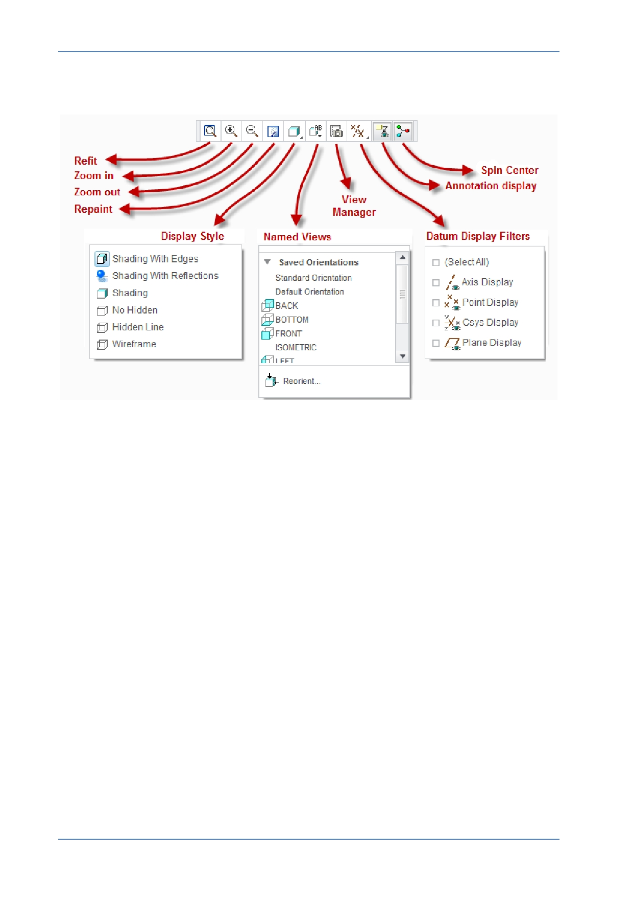

PTC Academic Program
Graphics Toolbar
The Graphics toolbar at the top of the graphics area controls how the model appears in
the graphics area.
Experiment with the options to see the effect they have on the appearance of the
model.
© 2012 PTC
Creo Parametric 2.0 Primer
Page 24